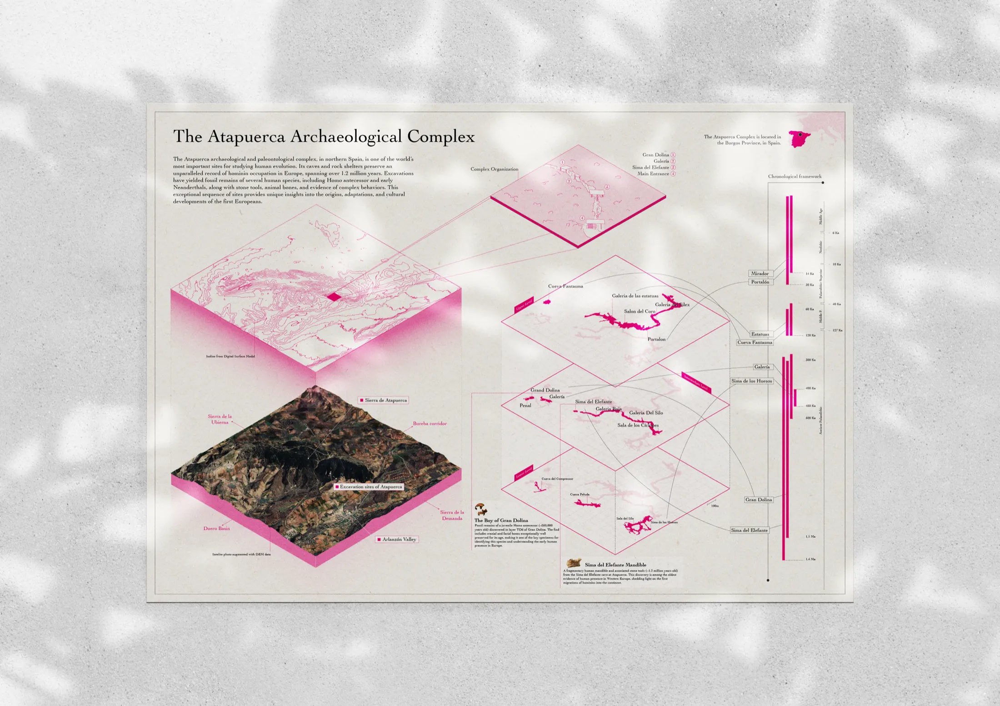

Infographics and data visualizations play a central role in archaeological research and communication by transforming complex datasets, spatial relationships, chronological sequences, and analytical results into clear and structured visual narratives. They make it possible to synthesize large volumes of information, reveal patterns that may remain difficult to identify in raw data, and highlight temporal, spatial, quantitative, or relational dynamics in an immediate and accessible way.
Beyond their role in presenting results, these visual tools can actively support the research process itself. By organizing information through diagrams, maps, timelines, comparative graphics, and other visual systems, they facilitate analysis, encourage interpretation, and help researchers explore relationships between different types of archaeological evidence. Their design therefore requires a careful balance between scientific accuracy, information hierarchy, and visual clarity.
By combining rigorous data handling with thoughtful graphic design, infographics and data visualizations can communicate complex archaeological knowledge without oversimplifying it. They provide effective tools for academic publications, exhibitions, digital platforms, educational resources, and public outreach, adapting scientific content to different contexts and audiences. In this way, visual communication becomes an integral part of the production, interpretation, and dissemination of archaeological knowledge.